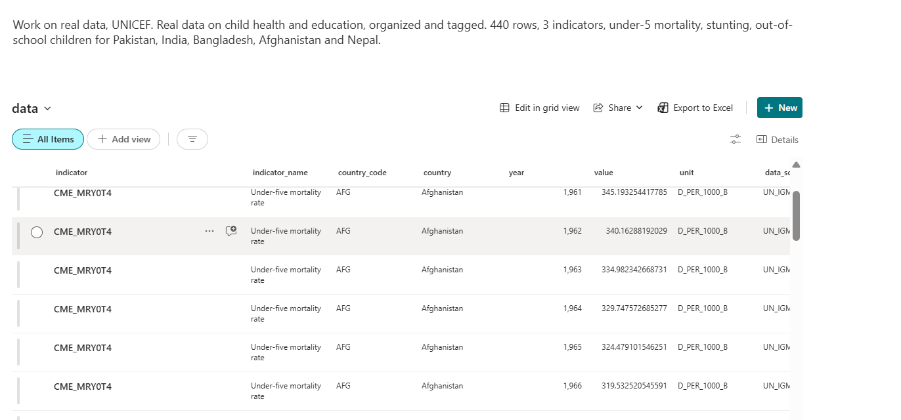

Data from the UNICEF Data Warehouse (SDMX API, https://sdmx.data.unicef.org), covering Pakistan, India, Bangladesh, Afghanistan and Nepal. Search and filter work offline once the page is loaded. This is my own project — it is not UNICEF work and not an official UNICEF page. Verify every number at data.unicef.org.
Under-five mortality rate (CME_MRY0T4)
What it means: Deaths of children under 5 per 1,000 live births
| Country | Latest year | Value | |
|---|---|---|---|
| Afghanistan | 2024 | 53.0 | |
| Bangladesh | 2024 | 30.5 | |
| India | 2024 | 26.6 | |
| Nepal | 2024 | 25.1 | |
| Pakistan | 2024 | 56.0 |
Pakistan trend (last 10 points): 2015: 74.8 · 2016: 72.4 · 2017: 70.1 · 2018: 67.9 · 2019: 65.8 · 2020: 63.7 · 2021: 61.7 · 2022: 59.7 · 2023: 57.8 · 2024: 56.0
Height-for-age <-2 SD (stunting) (NT_ANT_HAZ_NE2)
What it means: Percent of children under 5 who are stunted
| Country | Latest year | Value | |
|---|---|---|---|
| Afghanistan | 2022 | 44.6 | |
| Bangladesh | 2022 | 23.6 | |
| India | 2020 | 35.5 | |
| Nepal | 2022 | 24.8 | |
| Pakistan | 2018 | 37.6 |
Pakistan trend (last 7 points): 1986: 62.5 · 1991: 53.9 · 1992: 42.7 · 2001: 41.4 · 2011: 43.6 · 2013: 45.0 · 2018: 37.6
Out-of-school rate for children of primary school age (ED_ROFST_L1)
What it means: Percent of primary-school-age children out of school
| Country | Latest year | Value | |
|---|---|---|---|
| Afghanistan | 2015 | 37.0 | |
| Bangladesh | 2019 | 6.4 | |
| India | 2016 | 5.9 | |
| Nepal | 2019 | 5.6 | |
| Pakistan | 2018 | 23.0 |
Pakistan trend (last 1 points): 2018: 23.0
Same data in SharePoint
The same 440 rows are also published as a SharePoint list, with metadata on every row — indicator, country, year, value, unit and source — so the content stays organised, tagged and findable. The SharePoint site lives in my student Microsoft 365 tenant, so it opens only for people in that tenant; the screenshot below is the proof.
